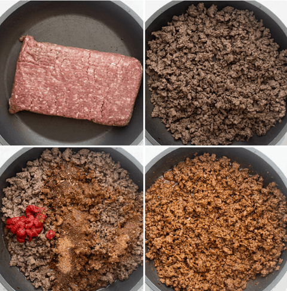

→ Making taco seasoning from scratch is super easy and can be cheaper
than buying the prepared taco seasoning. Here are the spices
I include in my recipe. Feel free to also add paprika, coriander, onion powder and crushed red pepper to give it some heat.
Chili powder
Cumin
Garlic powder
Mexican oregano
Salt and pepper
→ I provide suggested amounts in the recipe card
below because usually there’s more of the chili powder
and cumin compared to the other spices. However,
feel free to adjust the quantities, or use your
favorite prepared taco seasoning.
⌗How do you make ground beef taco meat

Place the ground beef in a skillet with olive oil.
Brown the beef with olive oil and then drain any fat.
Add the spices along with the tomato paste and water (or tomato sauce)
Bring the mixture to a simmer and then cook for a few more minutes until the sauce thickens.
→ And the end result is flavorful juicy homemade tacos that’s ready to be served in less than 15 minutes.
⌗Toppings for Tacos
→ I like to keep it simple with usually a few different toppings when I’m making these just for the family on weeknights.
However, I love having DIY taco bars with friends and family and I usually include the following toppings for tacos: